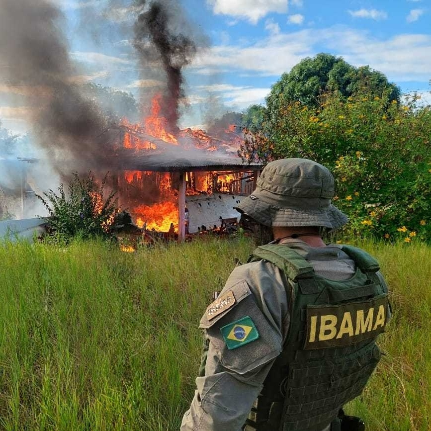
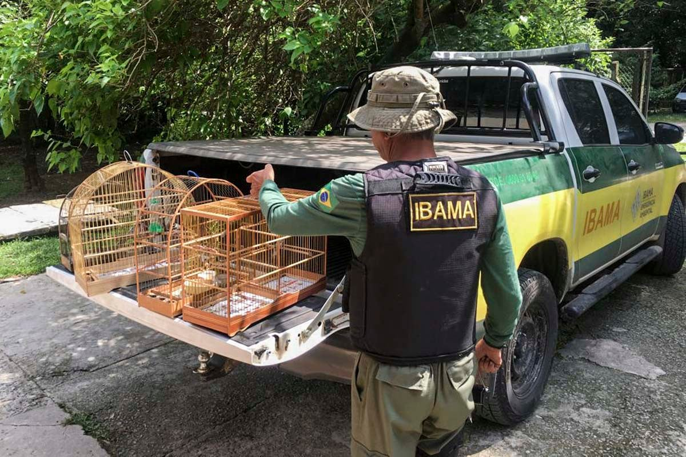

O Instituto Brasileiro do Meio Ambiente e dos Recursos Naturais Renováveis (IBAMA) é a principal entidade federal responsável pela execução de políticas ambientais no Brasil. Sua missão é garantir a proteção do meio ambiente e o uso sustentável dos recursos naturais.
Fundado em 1989, o IBAMA atua na fiscalização, preservação e monitoramento ambiental em todo o território nacional. Além de proteger a fauna e flora, o instituto também age contra crimes ambientais, como desmatamento ilegal e tráfico de animais.
O IBAMA é responsável por uma ampla gama de atividades relacionadas à proteção ambiental. Entre suas funções estão:
Um dos grandes desafios do IBAMA é o combate ao desmatamento, especialmente na Amazônia. O órgão realiza operações constantes para fiscalizar áreas de risco e coibir práticas ilegais de derrubada de árvores e queimadas.
O IBAMA está na linha de frente na proteção de áreas sensíveis, como a Floresta Amazônica e o Pantanal, e atua na prevenção e punição de crimes como o tráfico de animais silvestres e a extração ilegal de madeira. Suas ações são fundamentais para preservar a biodiversidade do Brasil.